Hello Everyone! My name is Aidan Venckus and I am a Computer Engineering 4th year at UC Santa Cruz.
Here you will find my hobbies, interests, and some of the exciting things I do in Engineering School.
In this new version of the drone I fixed many of the issues that I found whole flight testing V1.
Some of the improvements that were made include:
- Using lighter & cheaper foam
- Adding dihedral wings
- Flight computer stabilization
- Removed unnecessary parts for weight reduction
- Focused on having a good center of gravity (CG)
In the Winter quarter of 2022 I was able to take part in a drone training program that was partnered with UCSC and funded by the
CITRIS and the Banatao Institute to teach students how to fly various drones, take data, plan autonomous missions, and earn their
part 107 Remote pilot's license.
In this project I designed and built a UAV as a start to my goal of creating a long distance autonomous drone that can be retrofitted for various tasks.
I started this project by deciding on what type of drone I wanted to build, my favorite of which are fixed wing aircraft that have a glider type of airframe
because they are more fun to fly. I decided on doing a 4ft wingspan fixed wing single motor design that would have the motor mounted on top of it to allow for
gentler crashes and easier training. The firmware of the flight controller is ardupilot with mission planner installed to utilize the sensors and data avaliable.
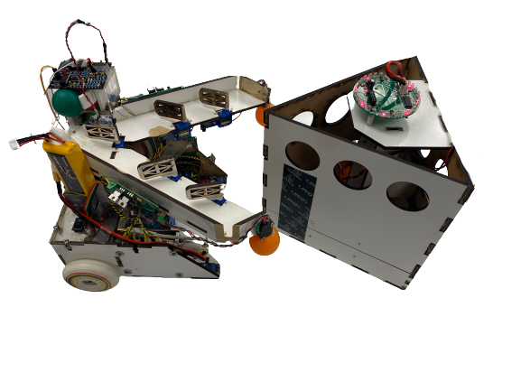 *Bot with Vat
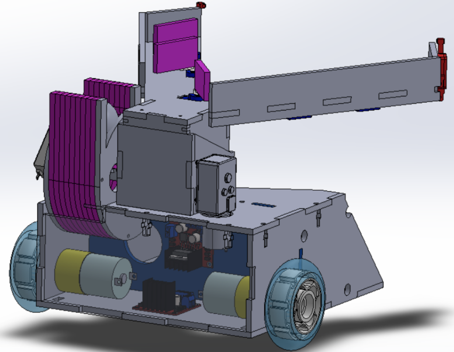 *Bot's Solidwork design
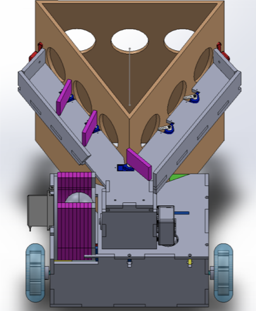 *Bot's Solidwork design 2
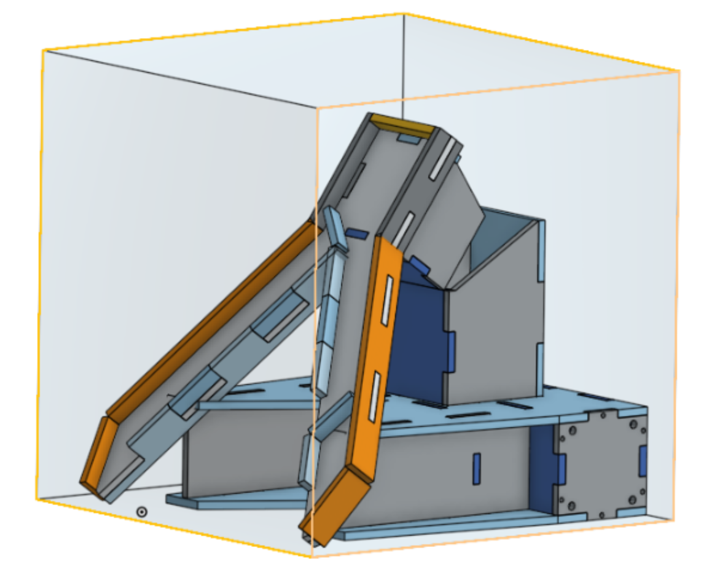 *Bot's Solidwork design with Size Restrictions
The purpose of this project is to design, build, and program an autonomous robot
that can complete a randomly generated field. The completion of a given field
consists of detecting triangular vats scattered around that can be detected by infrared beacons on
top of them. In order to complete a vat, the bot needs to deposit a ping pong ball into the correct
hole. The proper hole is designated by a strip of black tape beneath the hole in addition to the
correct side which is designated by a trackwire on the perimeter of the correct face.
This was a trackwire detector which I used on my capstone autonomous ground robot. It worked based on a inductor that
would try to read the magnetic field of a wire with osilating current running through it, take the signal, amplify it,
then sample the signal through a peak detector and comparator. This allowed the signal to go from analog to a digital
high and low to be read through an LED and in most cases the microcontroller IO.
I needed to revise my previous Beacon Detector because I had made a few mistakes that were worth designing a
new PCB for. I had made my traces too small which led to some of the ones that I used to have traces scratched
which acts like a cut wire (I changed this after ordering). In addition my previous design had a couple op amps in positive feeback accidently in
addition to having additional unnessesary gain stages (from 6 to 4). Lastly I did a complete size reduction and
compacted all the components by moving them and utilizing all the op amp ports.
This year for the holidays I gave a few Ornament PCBs to my family and friends. The PCB ran on a 9V battery and would flash its
LEDs based on the resistance of the potentiometer on it connected to the 555 timer. This allowed for the speed of the flashing to
be configurable and custom. In addition to this you are able to change out the LEDs for other colors but the resistors would need
to be changed as different colored LEDs require different voltages to run. I changed the schematic after ordering the PCB as I started
to increase the size of my traces on the PCB in addition to the size of the power and ground traces to be larger.
In this lab I got the chance to test various motors to be used in the capstone project. I got the chance to use
servos, stepper motors, and DC motors. We had a power distribution board that was able to power the motors with
5V and 12V when necessary and was able to use H-bridges and various dedicated boards to run the motors. In addition
we had to solve some inductive kickback when working with the DC motors and worked on different type of step methods
for the stepper motor. I had the chance to try wave step, full step, and half step. The type of step that is most often
used is micro step with sin wave phasing but I didn't have a chace to try it.
I created a PCB of a circuit that I found fascinating in my capstone class for fun. This PCB is a IR Light detector which should be able to see IR from over 16 feet away.
I designed the circuit first on a breadboard before taking the schematic and using the PCB creation software EAGLE to make the digital schematic. I then converted the
digital schematic into a PCB design and designed it to be relatively compact but still easy to see where each of the PCB traces are going.
Capstone Project: Lab 2 - Mechanical and Electronic Prototyping
Oct 18th, 2021
*Laser cutting MDF into Bot Design
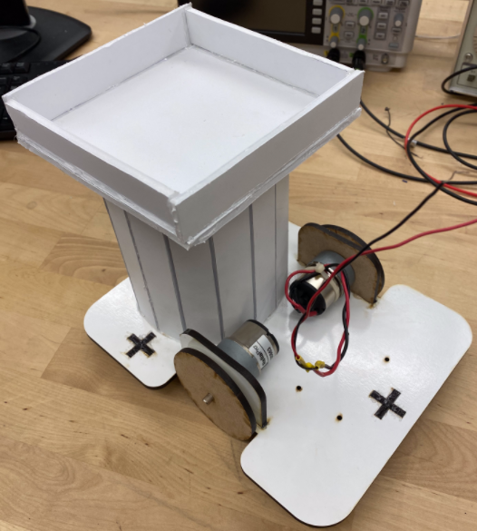 *Bot Isometric View
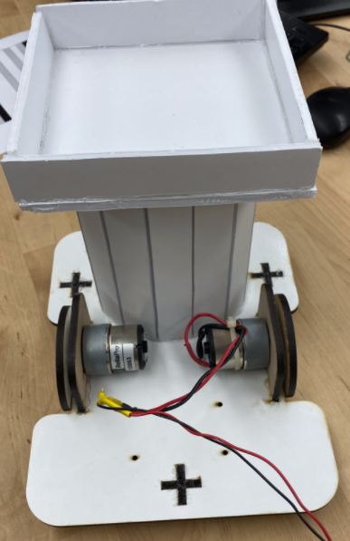 *Bot Front View
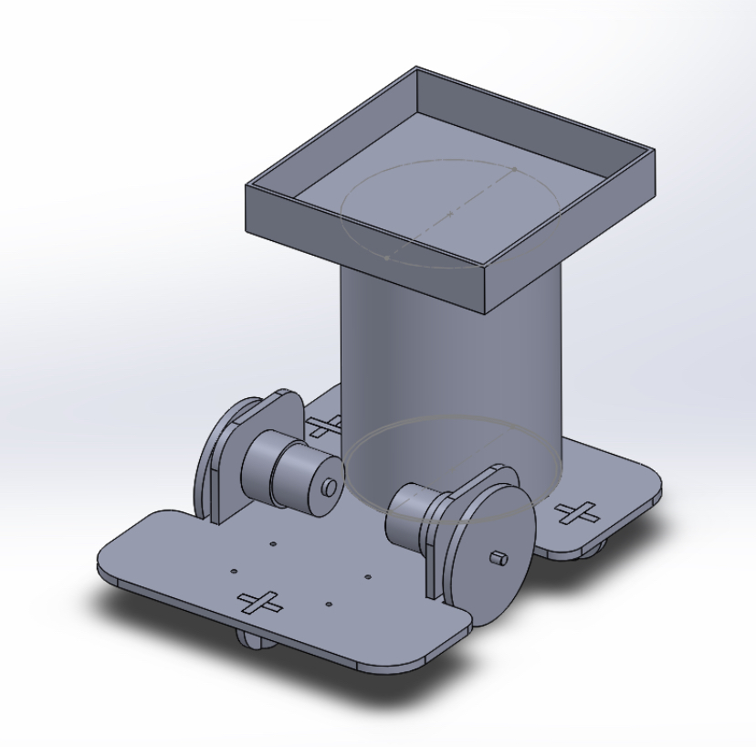 *Bot SolidWorks Design
This assignment was for us to design a practive bot that will be inspired on what we should be expecting for the final bot. I created this by using solidworks to design the
individual parts, assembled them together and made sure all the parts fit together. I then put all the parts on one plane and created a cutout design to then send to
the laser cutter.
Capstone Project: Lab 1 - Analog Signal Conditioning/Filtering
Oct 10th, 2021
*Blocking Beacon's line of sight (green LED shows output)
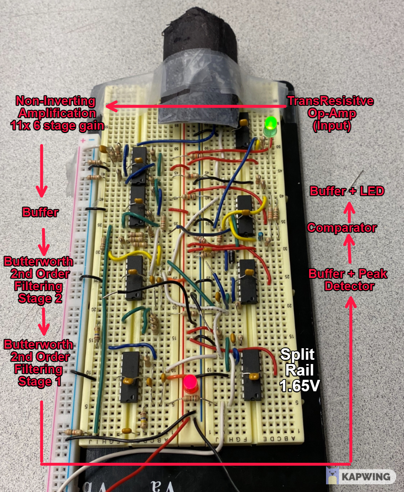 *Circuit Closeup
This assignment had us focus on creating a circuit from scratch for the purpose to read in IR signals and signal when they are seen.
It does this by using multiple stages such as a transresistive input, non inverting op amp stages for amplification,
a filtering stage by using a 4th order butterworth to only let in 2kHz signals, a peak detector, comparator with hysterisis with thresholds
set to be able to make it into a digital high-low signal, and lastly a LED to show the output.
This assignment had us coding on a uno32 based dual motor robot called the roach. The goal of the roach is to "Run from the light, hide in the darkness" meaning using its
motors and light sensor we needed to navigate a maze that can change and have it adapt to find the shade everytime.
This assignment had us practicing our skills in developing finite state machines (FSM), hierarchical state machines (HSM), and event driven programming with events handlers, service calls, and
timers instead of delays to prevent blocking code.
The Gif below shows the final product of us using a right hand maze rule to navigate the course.
I will be doing my Computer Engineering capstone this quarter. For the Capstone I decided to take the Mechatronics class that will likely
use every skill I've learned these past 3 years compressed into a 10 week course with multiple labs and a final project that will put all I know into a practical application.
This course is a combination of Software Engineering, Mechanical Engineering, and Eletrical Engineering.
Capstone Description:
The class goal is to do 4 labs all of varying skills and then a final project which encorporates all the skills to one 5 week robot.
- Lab 0 Event Driven Programming - The Cockroach
- Lab 1 Analog Signal Conditioning/Filtering
- Lab 2 Mechanical and Electronic Prototyping
- Lab 3 DC and Stepper Motors
- Final Project
*bright-dark red triangles are high-low elevation airplanes, green triangle is user location, blue triangles are landed planes
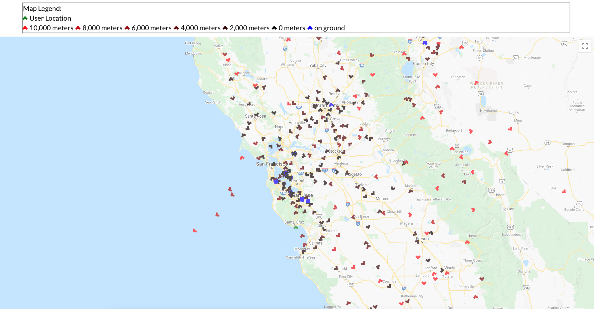
*Map Legend can be seen at the top
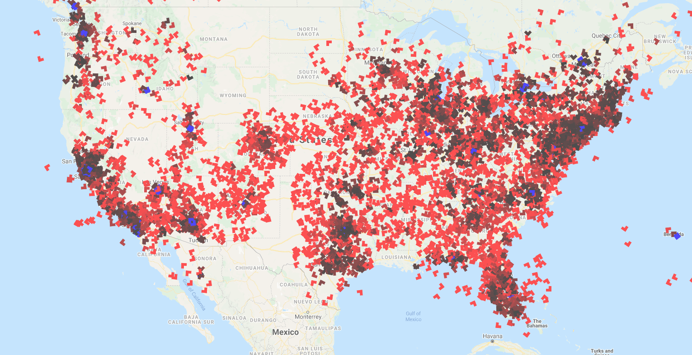
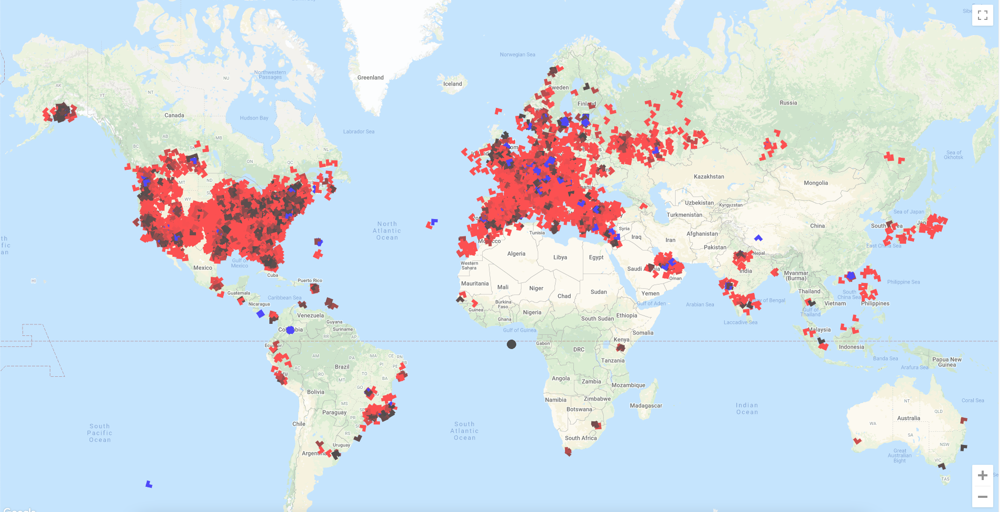
New update with the Air Traffic App includes planes showing their direction as a result of making the plane object into triangles and then
doing transformation(rotation) on the object per each planes directional data. The Planes also show elevation by different shades of red by
doing rgba(variable,0,0,1) when variable=(elevation*max_color_hue/highest_elevation). Another quality that was implemented was if the plane
was landed which was represented as a boolean value in the data.
My favoite thing that I implemented so far was that when you hover on each one of the react plane objects I used a "onMouseEnter()" and
"onMouseLeave()" event to have a box apear with data of the planes numerical registration ID, latitude, longitude, elevation(m), and speed(m/s).
Next steps in the Air Traffic App will be implementing the app to display airports which will likely require another API, database, or JSON file with the info.
Additionally I am in the progress of adding heatmaps to replace plane objects when an button is clicked which would show an interesting perspective of air traffic.
Lastly, I would also like to implement as an extra but not required feature of a unique speed and elevation change distinction such as another color, outline, or animation
(not actually sure what I plan to do yet) and I would like to display trails of planes (past flight) which will likely be small white lines or dots.
*Red dots are airplane positions, green dot is user location
New update with the Air Traffic App include after researching for some time using the OpenSky Network API
which utilizes my original choice of API the ADS-B API however this API requires payment so I went with the free alternitive
because I am doing this just for fun/practice/hobbie.
The OpenSky Network API which relies on ADS-B API, tracks
each aircraft (transponder) to a unique address (ICAO 24-bit) which is an aircraft's unique identifier (sometimes called
mode-s and is the aircraft's certificate of registration). The API then gathers the elevation, latitude, longitude,
direction, and other characteristics from other APIs and volenteers across the world who supply the data through Raspberry
Pis with an SDR and Antenna, so military and other filtered aircraft can be often seen (public tracking).
With the API I was able to access each aircraft's icao24(Unique ICAO 24bit address of transponder),
callsign, origin country, time per position, last contact, longitude, latitude, latitude(barometer and geo), status if
its landed, velocity(m/s), direction, rate of elevation change, sensors, squawk, spi(special purpose indicator), and what
sorce is tracking it. For the time being I only got the the aircraft location to be displayed.
Next steps in the Air Traffic App will be to implement more of the data onto the air traffic display. The data I plan to use
first will be to change the shade of the dots based on elevation diffrences, show direction by using an object other than a circle
and the data I have, have an indicator if the plane has landed.
The Air Traffic App first started as a progression from the Geolocation App. I started the
Geolocation App as a way to practice my newly founded skills in React and Javascript while
practicing working with APIs.
The current version uses the
Geolocation API by Mozilla which asks
for your location permission and then returns it as a latitude, longitude, and accuracy based on your
your using your computer or phones GPS if available. If not avaliable, it uses its WIFI signal.
If using a mobile signal, the position is triangulated by cell towers to work out the closest latitude
and longitude it can determine.
The App also works with the
google-maps-react API
which is a subset of
google maps API but, uses a smaller portion of the full API and allows for react objects to be added
(will be important when planes need to be added).
Although this was the end of the Geolocation App, I
used the Geolocation code to start a Plane Traffic App which will need plane location data for the next step.
After I finished the prototype I rewired and shoved all the components into tupperware to keep it protected and compact.
The TinyScope was my final project for my Embedded Systems Design course (CSE121) at UCSC
The Tinyscope is made from a PSoC-6 microcontroller that runs C code programmed and compiled in the PSoC Creator.
The TinyScope has features similar to those found in a lab osilliscope with the only restriction being that the board could
not handle above 5V.
The TinyScope featured 2 Waveform Channels with a sampling rate of 250k samples/second for all 4 ADC channels.
- 2 Channels for Analog Signals
- 2 Channels for Potentiometers’ Readings
2 Waveform Modes (Free-Running & Triggered)
User Input to alter Waveform
- Xscaling
- Yscaling
- Trigger Level
- Trigger Slope
- Waveform Stopped / Started
Frequency Calculation
Scrolling Waveforms (via Potentiometers)
Unfortunately I cannot display the full code as it could be an assignment for future quarters and that would be a lapse of academic integrity